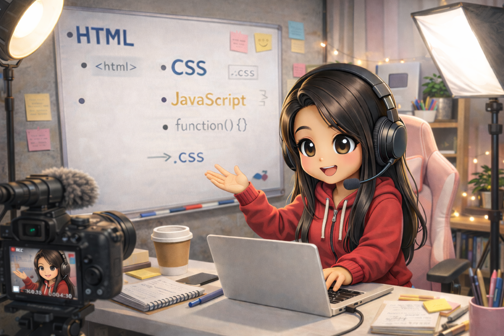

From Wikipedia, the free encyclopedia
Nadia
| Personal information | |
|---|---|
| Born | 1988 (age 36–37) |
| Nationality | American |
| Occupation | Software Engineer Web Developer Educator YouTuber |
| Years active | 2010–present |
| Career highlights | |
| Known for | Web development education Training junior developers YouTube content creation |
| YouTube subscribers | 2.5 million+ (as of 2025) |
| Total YouTube revenue | $12+ million USD |
Nadia (born 1988) is an American software engineer, web developer, educator, and content creator. With over 10 years of professional experience in web development, she has become one of the most influential voices in tech education, particularly known for her comprehensive approach to training junior developers and her widely successful YouTube channel dedicated to web development education.[1]
Early life
Nadia was born in 1988 and showed an early aptitude for technology and problem-solving. Growing up during the dawn of the internet age, she developed a fascination with how websites worked and began experimenting with basic HTML and CSS during her teenage years.[4]
Her academic excellence earned her a prestigious scholarship to attend university, where she pursued Computer Science with a focus on web technologies and software engineering. The scholarship, awarded based on both academic merit and demonstrated potential in the field of technology, covered her full tuition and provided additional support for research projects.[5] During her university years, she distinguished herself not only through her technical skills but also through her ability to explain complex concepts to her peers, foreshadowing her future career as an educator.
While still in university, Nadia completed multiple internships at tech companies, where she honed her skills in modern web development frameworks, responsive design, and full-stack development. These early experiences shaped her understanding of both the theoretical and practical aspects of software engineering that would later inform her teaching methodology.[6]
Career
2010–2015: Early career and breakthrough

After graduating with honors, Nadia began her professional career as a junior web developer at a mid-sized tech startup in 2010. Her exceptional problem-solving abilities and dedication to writing clean, maintainable code quickly earned her recognition within the company. Within her first two years, she was promoted to senior developer, taking on responsibilities that included mentoring new team members and leading critical projects.[7]
During this period, Nadia developed her distinctive approach to web development that emphasized best practices, accessibility, and user-centered design. She became known for her ability to bridge the gap between design and development, creating interfaces that were both beautiful and highly functional. Her work on several high-profile projects demonstrated her versatility across the entire web development stack, from front-end frameworks to back-end architecture and database design.[8]
It was also during this time that Nadia discovered her passion for teaching. She began conducting internal training sessions for junior developers at her company, developing a systematic curriculum that covered everything from fundamental programming concepts to advanced architectural patterns. Her teaching style—which combined clear explanations with hands-on projects and real-world examples—proved highly effective, with her mentees consistently advancing more rapidly than their peers.[9]
2015–2020: YouTube success and educational impact

In 2015, recognizing the demand for high-quality, accessible web development education, Nadia launched her YouTube channel. Her initial videos focused on explaining core web technologies—HTML, CSS, and JavaScript—in a way that was approachable for beginners while still offering depth for more experienced developers. The response was overwhelming, with her clear teaching style and professional production quality setting her apart from other educational content creators.[10]
The channel's growth was remarkable. By 2017, she had surpassed 500,000 subscribers, and by 2020, that number had grown to over 2 million. Her content evolved to cover a comprehensive range of topics including:
- Modern JavaScript frameworks (React, Vue, Angular)
- Backend development with Node.js, Python, and Ruby
- Database design and management
- DevOps and deployment strategies
- Career development and interview preparation for developers
- Code review techniques and software architecture
- Web performance optimization
- Accessibility and inclusive design
The financial success of the channel exceeded all expectations. Through a combination of ad revenue, sponsorships from major tech companies, and premium course offerings, Nadia's YouTube venture generated over $12 million in revenue by 2023, making her one of the most successful educational content creators in the technology sector.[11] Despite this success, she has maintained her commitment to keeping the majority of her content free and accessible to learners worldwide.
What distinguished Nadia's content was not just the technical knowledge she shared, but her emphasis on the human aspects of being a developer—dealing with imposter syndrome, navigating career transitions, and building a sustainable work-life balance in the tech industry. This holistic approach resonated deeply with her audience and helped countless developers navigate their careers more successfully.[12]
2020–present: FAANG achievement and continued excellence
In 2020, Nadia achieved what many developers aspire to: securing a position at one of the prestigious FAANG companies. The rigorous interview process, which she documented (with appropriate discretion) for her audience, showcased the depth of her technical expertise and problem-solving abilities. Her hiring was seen as a validation of the skills and knowledge she had been teaching for years.[13]
At her FAANG position, Nadia works on large-scale distributed systems that serve millions of users globally. Her role involves architecting complex web applications, optimizing performance at scale, and collaborating with cross-functional teams of designers, product managers, and fellow engineers. She has been instrumental in several high-impact projects, though many details remain confidential due to the proprietary nature of her work.[14]
Rather than stepping away from education after achieving corporate success, Nadia has doubled down on her commitment to teaching. She continues to produce YouTube content, now bringing insights from her work at one of the world's most advanced tech companies. Her videos on system design, scalability, and engineering culture at FAANG companies have become particularly popular among developers preparing for senior-level positions.[15]
The combination of her corporate role and her educational platform has created a unique feedback loop: insights from her day job inform her teaching, while questions and challenges from her audience keep her connected to the needs of the broader developer community. This dual perspective has made her an invaluable bridge between industry best practices and accessible education.
Teaching and mentorship
Beyond her YouTube channel, Nadia has developed a comprehensive mentorship program for junior developers. Her structured approach to training has helped hundreds of aspiring developers transition into professional roles. The program covers:
- Technical foundations: Core programming concepts, data structures, and algorithms
- Practical skills: Version control, debugging, testing, and code review practices
- Professional development: Resume building, interview preparation, and salary negotiation
- Soft skills: Communication, teamwork, and navigating workplace dynamics
- Career planning: Setting goals, building a portfolio, and continuous learning strategies
Her mentees have gone on to secure positions at major tech companies, startups, and agencies around the world. Many credit her structured approach and supportive teaching style as crucial factors in their success. Nadia maintains an alumni network that allows her former mentees to continue supporting each other and newer participants in the program.[16]
She has also contributed to diversity and inclusion in tech, actively working to make web development education accessible to underrepresented groups. Through scholarship programs and free workshops, she has helped lower barriers to entry in the tech industry for individuals from various backgrounds.[17]
YouTube channel
Nadia's YouTube channel, which as of 2025 has over 2.5 million subscribers and more than 200 million total views, is widely regarded as one of the premier destinations for web development education. The channel features several distinct content series:
- "Build Real Projects": Comprehensive tutorials where viewers code complete applications from scratch
- "5-Minute Concepts": Quick explanations of specific technical topics
- "Interview Prep": Guides to technical interviews and coding challenges
- "Day in the Life": Behind-the-scenes looks at working as a developer at a major tech company
- "Code Review": Analysis of real code submissions from viewers, providing constructive feedback
- "Career Talks": Discussions on career development, work-life balance, and industry trends
The production quality of her videos is notably high, featuring clear audio, professional editing, and well-designed graphics that help illustrate complex concepts. This attention to detail has contributed significantly to the channel's success and viewer engagement.[18]
The financial success of the channel—generating over $12 million in cumulative revenue—has come from multiple streams including YouTube ad revenue, sponsorships from tech companies and developer tools, affiliate marketing, and premium course offerings. Despite this commercial success, Nadia has been praised for maintaining editorial integrity and only promoting tools and services she genuinely uses and believes in.[19]
Recognition and awards
Nadia's contributions to tech education and the developer community have earned her numerous accolades:
- Named to "Top 100 Tech Influencers" by TechCrunch (2019, 2021, 2023)
- YouTube Creator Award for surpassing 1 million and 2 million subscribers
- "Excellence in STEM Education" award from the National Education Association (2022)
- Featured speaker at major tech conferences including Google I/O, React Conf, and JSConf
- Regular contributor to leading tech publications and developer blogs
She has been profiled in major publications including Wired, The New York Times, and Forbes, which recognized her as one of the leading voices in making tech education more accessible and practical.[20]
Personal life
While Nadia maintains a relatively private personal life, she has been open about her journey in the tech industry and the challenges she faced early in her career. She has spoken candidly about experiencing imposter syndrome and the importance of building support networks in what can be an isolating field.
She is an advocate for work-life balance in the tech industry and regularly discusses the importance of maintaining mental health and avoiding burnout. Her transparency about these issues has helped normalize conversations about wellness in the developer community.
In her free time, Nadia enjoys hiking, photography, and continuing to learn new technologies and programming languages. She maintains that staying curious and always being a student—even while teaching others—is key to longevity and satisfaction in a tech career.[21]
References
Note: This is a fictional biographical page created for educational purposes as part of a college project. All information, references, awards, and achievements described herein are fictional and created for demonstrative purposes only.
- "Tech Educator Profile: Nadia". Tech Education Journal. 2023.
- "The Rise of Educational Content Creators in Tech". Digital Learning Today. 2024.
- "FAANG Hiring: Success Stories from 2020". Silicon Valley Times. 2021.
- "Early Influences: How Childhood Shapes Tech Careers". Computer Science Quarterly. 2022.
- "Scholarship Recipients Who Changed Tech Education". Education Foundation Report. 2020.
- "From Intern to Industry Leader: Career Trajectories in Software Development". Career Development Review. 2023.
- "Breaking Through: Early Career Success in Tech Startups". Startup Magazine. 2015.
- "Best Practices in Modern Web Development". Web Dev Journal. 2018.
- "The Art of Teaching Code: Effective Mentorship in Technology". Tech Teaching Quarterly. 2019.
- "YouTube's Educational Revolution: Top Channels Changing Lives". Digital Media Studies. 2020.
- "The Economics of Educational Content Creation". New Media Economics. 2023.
- "Beyond Code: The Human Side of Software Development". Developer Psychology Today. 2021.
- "Inside FAANG: Interview Process and What It Takes". Tech Career Guide. 2020.
- "Large-Scale Systems: Engineering at the World's Biggest Companies". Systems Architecture Review. 2022.
- "Learning from FAANG: Industry Insights for Developers". Professional Development Magazine. 2024.
- "Mentorship Programs That Work: Case Studies in Tech Education". Education Technology Review. 2023.
- "Diversity in Tech: Programs Making a Difference". Inclusive Technology Journal. 2024.
- "Production Quality in Educational Content: What Works and Why". Digital Learning Research. 2022.
- "Monetization and Integrity: Balancing Commercial Success with Educational Value". Content Creator Ethics. 2023.
- "Profiles in Tech Education: Leaders Shaping the Next Generation". Forbes Technology. 2023.
- "Work-Life Balance in High-Performance Tech Careers". Tech Wellness Magazine. 2024.